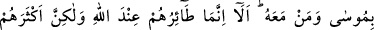
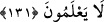

bilmeleri, inat ve azgınlıklarından vazgeçmeleri için Firavun’un kavmini yıllarca kıtlık
içerisinde yaşatmış buna ilave olarak çeşitli âfetlerle meyvelerini ve başka ürünlerini
noksanlaştırmıştır. Çünkü bunlar, insanların yiyecek ve gıda maddelerini teşkil
etmekteydi.
Ka‘b (r.a.)’dan şöyle rivayet edilmiştir: “İnsanlar üzerine bir zaman gelecek ki, o
zaman hurma ağacı sadece bir tane hurma verecektir.”
İbn Abbas (r. anhümâ) şöyle demiştir: “Kıtlık, kır ve vahalarında; ürünlerin
azaltılması ise şehirlerinde olmuştur.”
Ayette “öğüt alsınlar diye” “yani umulur ki öğüt alırlar diye” buyurulması,
Firavun’un kavminin cezalandırılmasının sebebidir. Bu, iki şekilde tefsir edilebilir:
Ya kullarla ilgili maksadlara göre Allah Teâlâ’nın fiillerini sebeplere bağlamanın câiz
olduğuna delil teşkil eder. Nitekim Ehl-i sünnet âlimlerinin çoğu bu görüştedir. Yahut da
sonuç, kendisinin neticesinden kaynaklandığı için buradaki sebep amaç haline
getirilmiştir. Çünkü Allah Teâlâ’nın fiillerinin bir kısım açık ve kuvvetli maslahat ve
gayelere tâbî kılınması konusunda hiç bir ihtilaf yoktur. Öyle ki bu maslahat ve gâyeler,
olmasalardı Allah o fiilleri yerine getirmezdi.
Ayet, musibetlerin, zorluk ve sıkıntıların, uyanmaya ve ibret almaya sebep olduğuna
dikkat çekmektedir. Fakat bu, basiret sahibi ve saadet ehli olan kimseler için söz
konusudur. Şekâvet ehlini ise ne nimetin bolluğu, ne de azabın şiddeti gafletten
uyandırır.
Şeyh Sa’di (k.s.) der ki:
Ne kadar çalışılsa da söğüt dalında gül bitmez
Bir zenci hamama gitmekle beyaz olmaz
131. Onlara bir iyilik (bolluk) gelince, “Bu bizim hakkımızdır” derler; eğer
kendilerine bir fenalık gelirse Musa ve onunla beraber olanları uğursuz sayarlardı.
Bilesiniz ki, onlara gelen uğursuzluk Allah katındandır, fakat onların çoğu bunu
bilmezler.
“Onlara bir iyilik” Firavun’un kavmine genişlik, bolluk ve buna benzer iyilikler
“geldiği zaman: “Bu bizim hakkımızdır.” yani, bizim için veya onu hakettiğimizden bu
iyilik bize verilmiştir “derler.” Allah’ın bir ikramı olduğunu hiç düşünmezlerdi.
“Kendilerine” kuraklık, kıtlık veya başka “bir kötülük ulaşırsa, Mûsâ ve onunla
berâber olanları uğursuz sayarlardı.” ve “Bu bize, onların uğursuzluğu sebebiyle